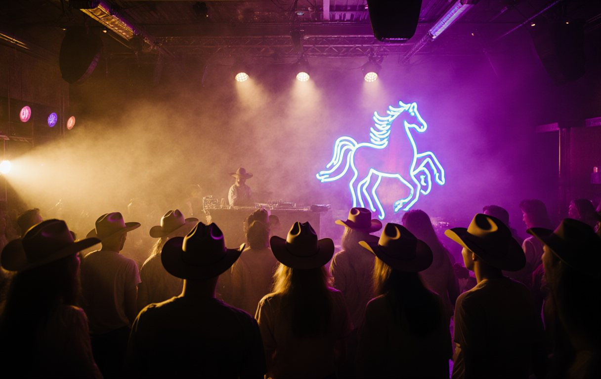

Köhne Diz v Talas
The big one under the lights, then the party goes till the sun comes up. AIGYR ULAK NIGHTS. STATE HIPPODROME. 19:00.
GET TICKETS »011142ISEZ CONFERENCE
| # | TEAM | P | W | D | L | GD | PTS |
|---|---|---|---|---|---|---|---|
| 1 | Talas | 5 | 5 | 0 | 0 | +20 | 15 |
| 2 | Chu | 6 | 4 | 2 | 0 | +7 | 14 |
| 3 | Nurzhan | 6 | 4 | 0 | 2 | +6 | 12 |
| 4 | Iyık Janyl | 6 | 3 | 1 | 2 | +5 | 10 |
| 5 | Kara-Bulak | 5 | 3 | 0 | 2 | -1 | 9 |
| 6 | Kyzyl-Adyr | 5 | 2 | 1 | 2 | -2 | 7 |
| 7 | Köhne Diz | 6 | 2 | 0 | 4 | -5 | 6 |
| 8 | Lower Naryn | 6 | 2 | 0 | 4 | -7 | 6 |
| 9 | Dastgoh | 5 | 1 | 1 | 3 | -4 | 4 |
| 10 | Sary-Bulak | 6 | 1 | 1 | 4 | -9 | 4 |
| 11 | Semiz | 6 | 0 | 2 | 4 | -10 | 2 |
HIGHLAND CONFERENCE
| # | TEAM | P | W | D | L | GD | PTS |
|---|---|---|---|---|---|---|---|
| 1 | Boztorgoy | 6 | 6 | 0 | 0 | +17 | 18 |
| 2 | Karakoyun | 6 | 5 | 0 | 1 | +15 | 15 |
| 3 | Tanıp | 5 | 4 | 1 | 0 | +14 | 13 |
| 4 | Karatau Select | 5 | 4 | 0 | 1 | +7 | 12 |
| 5 | Chatkal Highlands Select | 6 | 2 | 1 | 3 | -2 | 7 |
| 6 | Naiman | 6 | 2 | 1 | 3 | -2 | 7 |
| 7 | Northern Steppe Select | 6 | 2 | 1 | 3 | -4 | 7 |
| 8 | Akjele | 4 | 2 | 0 | 2 | -1 | 6 |
| 9 | Chubar (Highland) | 5 | 2 | 0 | 3 | -6 | 6 |
| 10 | Kökjal | 6 | 2 | 0 | 4 | -7 | 6 |
| 11 | Sarybagysh | 5 | 1 | 1 | 3 | -7 | 4 |
| 12 | Aksay Plateau Select | 5 | 0 | 1 | 4 | -8 | 1 |
| 13 | Moiynkum Select | 5 | 0 | 0 | 5 | -16 | 0 |
Highland results are phoned in from the valleys. Some arrive late. Some never arrive. That's the steppe, baby.
LATEST

THE BIG ONE: BOZTORGOY v KARAKOYUN, TWO UNBEATEN CLANS, ONE GOAT
Five from five against five from five on the Moiynkum winter grounds. The Highland title could be decided on Saturday, if anyone can get a phone signal.

ILYASOV WANTS TO PAY SEMIZ IN TULPARCOIN. DIRECTORATE: LOL NO
Jason Ilyasov offered winless Semiz a sponsorship deal paid in Tulparcoin. The Directorate says prize money must be "in lawful currency".
TALAS 7, SARY-BULAK 4: FOUR FROM FOUR AND THE HIPPODROME GOES NUTS
Adilet Turdumamat uulu scores three as Talas stay perfect, Semiz finally get a point, and 15,200 people drink the Aigyr Deck dry by 22:40.

CONCESSION RENEWAL "A FORMALITY", SAYS BOSS
Deputies want a tender for the Hippodrome's Saturday-night concession. Nurik wants them to come to Ulak Nights.
IS THE CAGE FIGHTER COMING TO ULAK NIGHTS? NURIK SAYS "MAYBE" 👀
Daniel Sagynbaev rode two training sessions with Talas and his video went viral. Now Jarysh wants him on the deck.
"JUST FRIENDS": NURIK ON THAT DUBAI PHOTO
From our archive: the Boss explains the photograph from the Dubai World Cup that every newspaper in Talas printed.
😍 JARYSH GIRLS OF THE WEEK